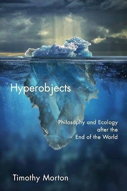
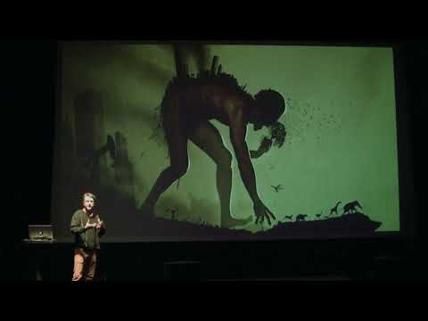
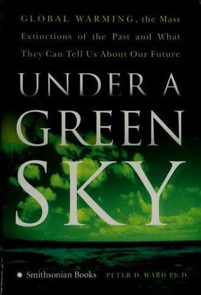
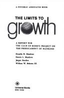
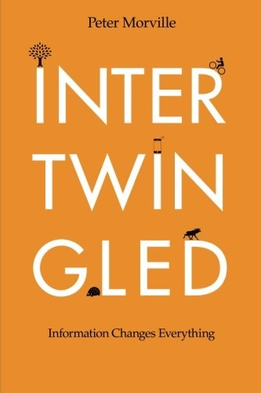
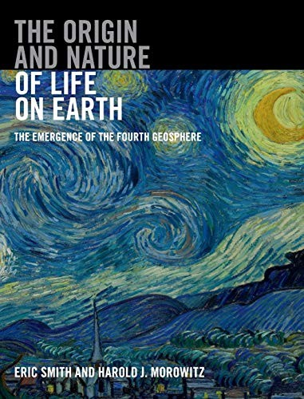
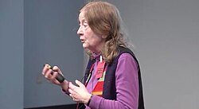
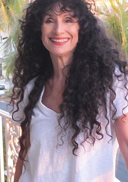
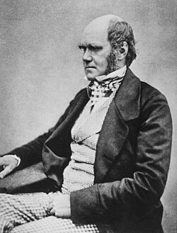
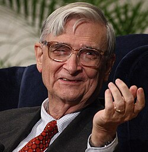

2013
Hyperobjects: Philosophy and Ecology after the End of the World ↗
Objects and processes that exceed the scales at which we ordinarily perceive the world.
Simulate World · Reading list
Books, essays, and models for thinking about our world.
A companion to the essay, from ecological relationships and collective decision-making to models we can explore.


Objects and processes that exceed the scales at which we ordinarily perceive the world.

Past mass extinctions and their implications for thinking about environmental change.

An early study of interacting global constraints using computer-generated scenarios.
A book-length companion to the water-temple research discussed in the essay: irrigation, cooperation, and emergent order.

An introduction to feedback, stocks, flows, and the behavior of systems.

On systems that benefit from variability, stress, and uncertainty.

Information architecture, systems thinking, and the connections between people and information.

The emergence of life through the connections between geochemistry, metabolism, and the organization of the biosphere.
On making room for environmental grief before returning to engagement. A close companion to Mixed Messages.
An inquiry into sacred values, social coordination, and unforeseen consequences.
The research at the heart of the thesis’s Balinese water-temple example: ecological simulation and the organization of irrigation.
A simplified model exploring inequality and resource use through scenarios.
A framework for thinking about where changes to a system may matter most.
An essay about active reading and making explanations something a reader can investigate.
Architect exploring the connections between design, cities, and complex systems.
Systems researcher and coauthor of HANDY, a model of inequality and resource use.

Atmospheric scientist working on weather prediction and coupled human–Earth systems.
Coauthor of HANDY, exploring resource use, inequality, and societal dynamics.
Whole Earth Catalog editor and cofounder of the Long Now Foundation.
Economist studying climate policy, uncertainty, and decision-making.
Philosopher investigating existential risk and the long-term future of humanity.

Poet and naturalist writing about perception, nature, and the human place on Earth.

Naturalist whose theory of evolution connects life through descent and natural selection.
Writer exploring geography, ecology, and the histories of human societies.
Environmental writer connecting ecology, business, and social change.
Environmental advocate working on systems thinking and climate solutions.
Environmental writer and critic of industrial civilization.
Journalist investigating climate change and the loss of biodiversity.
Science writer exploring how people are transforming the planet.
Anthropologist studying Bali’s water temples, cooperation, and emergent order.

Biologist and naturalist writing about biodiversity and the social lives of organisms.
{kind=link}
{kind=link}
{kind=link}
.jpg){kind=link}